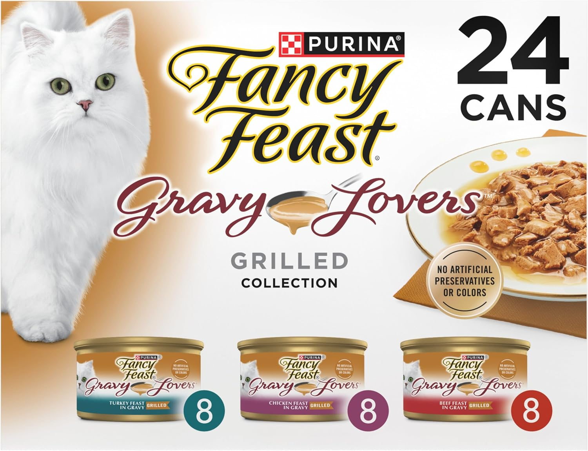

Seattle Humane is Kimi's go-to hospital. You can also adopt pets there!
We mix two types of dry food for Kimi:
Occasionally we give her wet food for a change:
Water fountain and food feeder are essentials:
Toys are important too! Here's a video on the best cat toys: